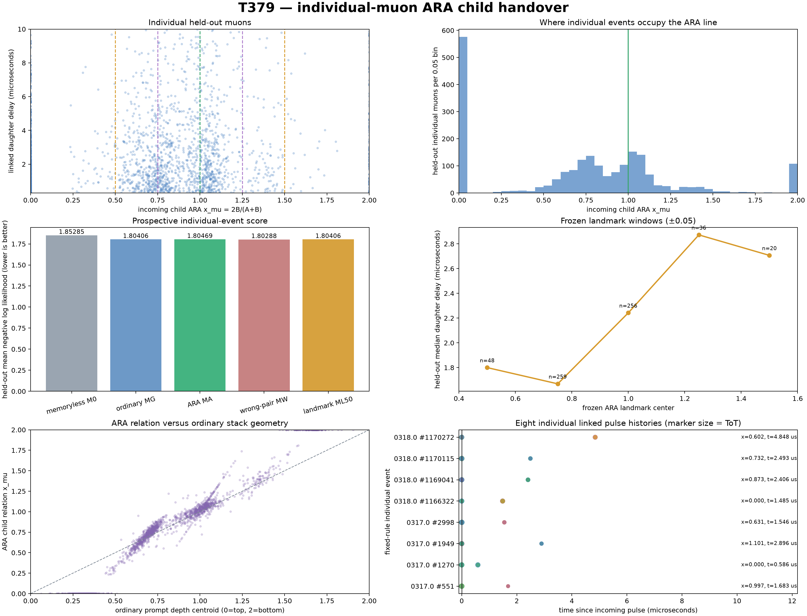

T379 — individual-muon child handover
2,396 calibration and 2,109 untouched held-out linked events.
Frozen protocol SHA-256: b9219da0db0dae6b4b1e2b2b203378bcebee1fa5e0450d92b45acaded541b669
How to read the test
Phase A
Gain-normalised prompt pulse strength in upper counters 1+2.
Phase B
Gain-normalised prompt pulse strength in lower counters 3+4.
ARA x_mu2B/(A+B). 0 = purely upper, 1 = equal, 2 = purely lower.
Outcome
Microseconds until the one later electron-candidate cluster in the same detector event.
The detector sees the charged electron in a later linked hardware trigger. The neutrinos are created in the same decay but are not directly timed here.

Prospective scores
| model | held-out mean NLL (lower better) |
|---|---|
| M0 | 1.8528471 |
| MG | 1.8040590 |
| MA | 1.8046886 |
| MW | 1.8028830 |
| ML50 | 1.8040626 |
ARA improvement over ordinary geometry: -0.0006297; chronological-block 95% interval -0.0014962 to +0.0002848.
Within-run outcome-permutation delta: mean +0.0000193, 95% range -0.0008925 to +0.0008965.
Separate frozen x=0.50 landmark gate
NOT SUPPORTED
Calibration direction higher hazard: True; ordinary-minus-landmark held-out delta -0.0000037, chronological-block 95% interval -0.0012136 to +0.0010606.
Each untouched run
| run | n | ordinary MG | ARA MA | MG−MA |
|---|---|---|---|---|
| 6845.2020.0317.0 | 1,079 | 1.807003 | 1.807474 | -0.000471 |
| 6845.2020.0318.0 | 1,030 | 1.800975 | 1.801771 | -0.000796 |
Frozen landmarks
| x | n | share | median delay us | mean delay us | ordinary rate/us | ARA rate/us |
|---|---|---|---|---|---|---|
| 0.50 | 48 | 2.276% | 1.800 | 2.406 | 0.4042 | 0.4166 |
| 0.75 | 259 | 12.281% | 1.669 | 2.436 | 0.4863 | 0.4861 |
| 1.00 | 256 | 12.138% | 2.243 | 3.050 | 0.3111 | 0.3045 |
| 1.25 | 36 | 1.707% | 2.873 | 3.639 | 0.3352 | 0.3303 |
| 1.50 | 20 | 0.948% | 2.707 | 3.846 | 0.3102 | 0.3262 |
Data quality
Calibration-only fourfold ToT medians (ns): ch1=18.750, ch2=20.000, ch3=18.750, ch4=23.750.
| file | raw lines | events | clean linked candidates | parse errors |
|---|---|---|---|---|
| 6845.2020.0211.0 | 4,396,021 | 1,185,844 | 1,206 | 0 |
| 6845.2020.0212.0 | 4,406,576 | 1,189,621 | 1,190 | 0 |
| 6845.2020.0317.0 | 3,550,301 | 1,174,538 | 1,079 | 0 |
| 6845.2020.0318.0 | 3,531,182 | 1,170,315 | 1,030 | 0 |
Boundary
This test asks whether one incoming muon's prompt child relation improves the prospective timing distribution of its own later visible daughter. It does not directly observe either neutrino and cannot turn an intrinsically stochastic decay into an exact timestamp unless the data contain reproducible advance information.